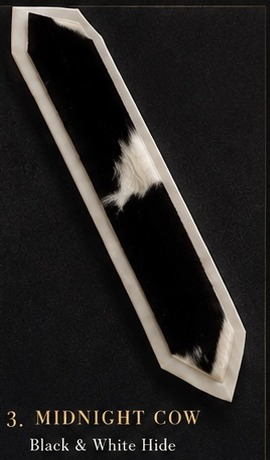
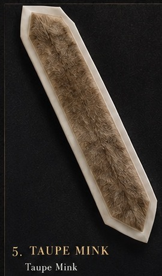
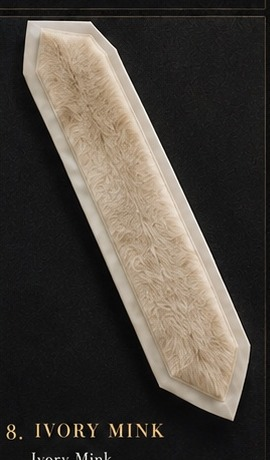
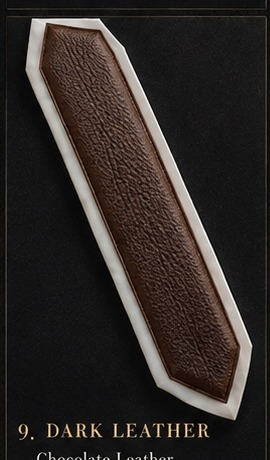

DESIGN 01
Arctic Spot
Black-and-white natural hide with an irregular, restrained spotted pattern.
Ataras for a tallis, using hide, low-pile mink-look textures and leather as the design language—not applied decoration.
Black-and-white natural hide with an irregular, restrained spotted pattern.

Cool silver-gray mink-look texture with tonal movement.

High-contrast black-and-white hide with large organic patches.

Deep blue mink-look texture for a distinctive but understated finish.

Warm beige/taupe mink-look texture.

Charcoal-gray mink-look texture with soft variation.

Brown-and-black brindle hide with naturally streaked movement.

Warm ivory mink-look texture.

Deep chocolate leather, clean and masculine.

Dark navy leather with a refined grain.